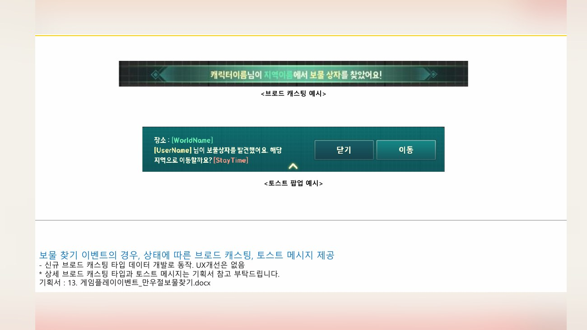
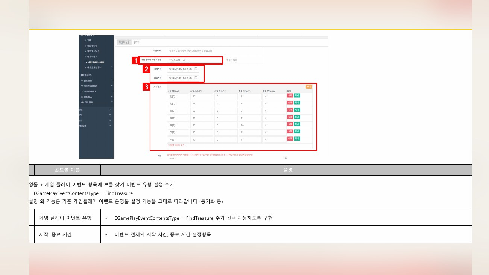
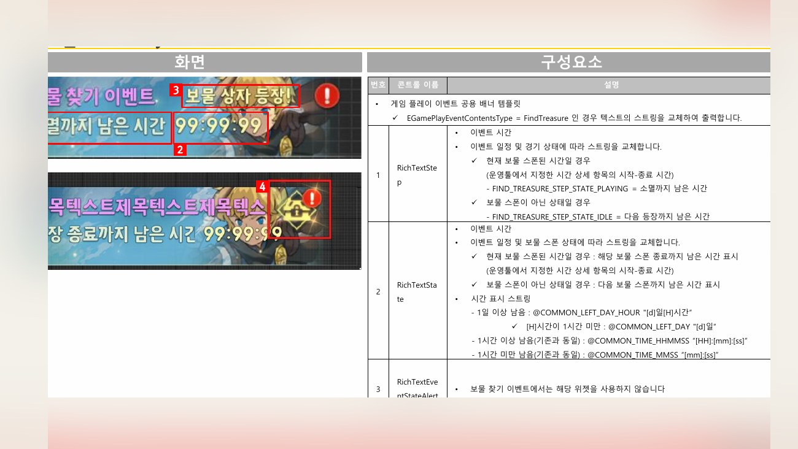
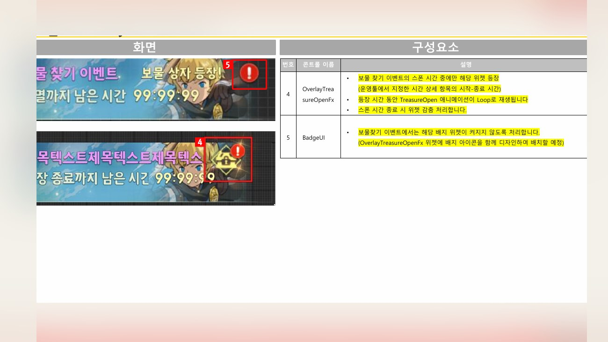
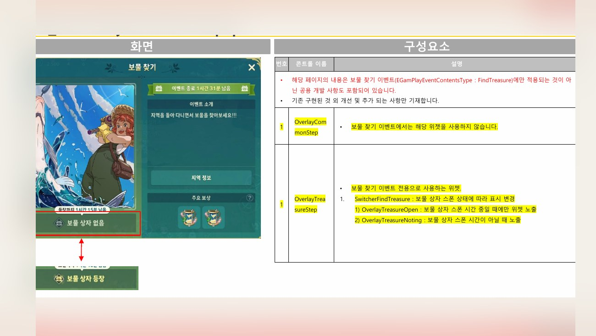
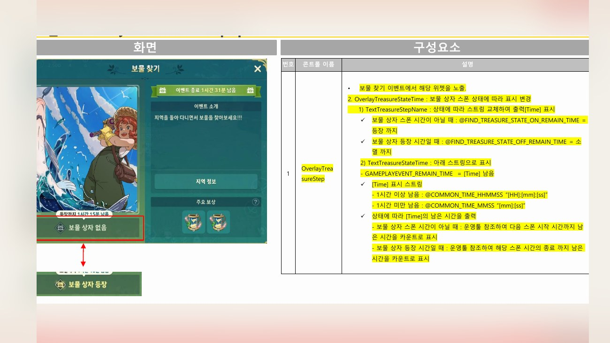
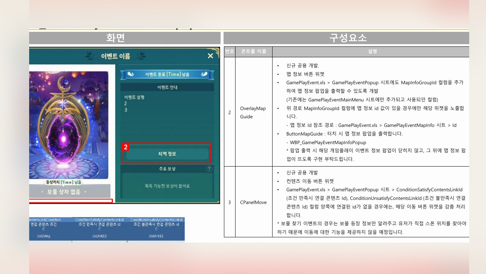
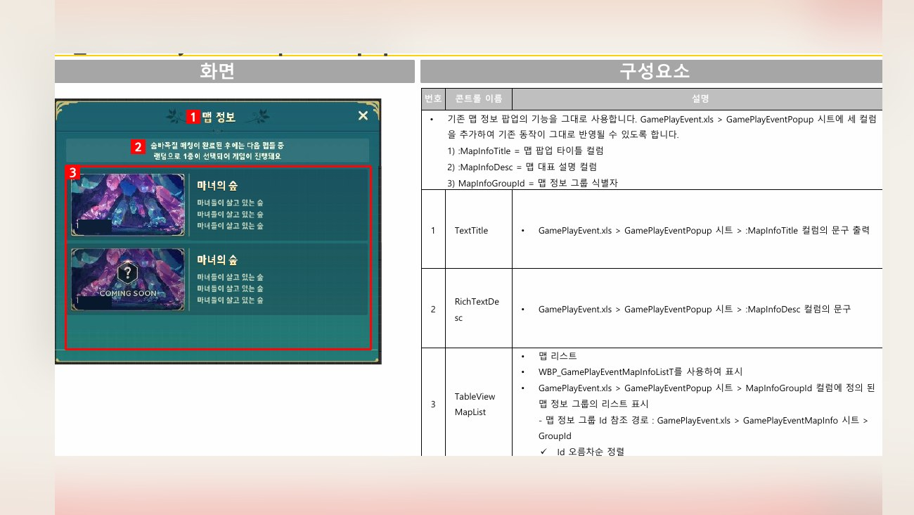

Planning Context
어떤 기획이었나
- 게임플레이 이벤트는 기간성 이벤트처럼 보이지만, 실제로는 신규 콘텐츠 규칙과 보상/진행 상태가 함께 들어갑니다.
- 인게임에서 행동하는 흐름과 아웃게임에서 상태를 확인하는 흐름이 분리되면 유저가 이벤트 규칙을 놓치기 쉽습니다.
ProjectN · Gameplay Event
이벤트성 신규 게임 콘텐츠가 들어갈 때 인게임/아웃게임 UX를 함께 정리한 사례입니다.

Planning Context
Process
Deliverables
Result
이벤트성 신규 콘텐츠의 인게임/아웃게임 접점을 분리해 유저 안내와 데이터 기준을 함께 정리했습니다.
Deliverable Captures
원본 문서는 포함하지 않고, 포트폴리오 확인용으로 일부 페이지만 이미지화했습니다. 슬라이드 마스터/상하단 영역은 흐림 처리했습니다.







